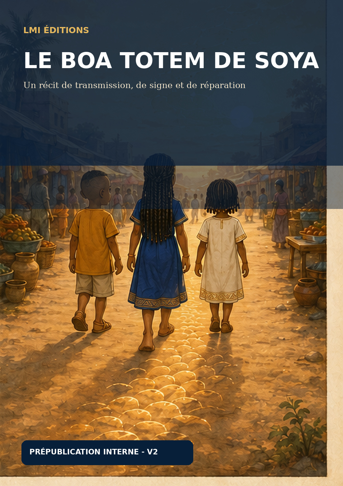

SOYA
Actrice principale, 9–11 ans. Elle ressent l’alerte, comprend le pacte et décide de réparer.
LMI Éditions · jeunesse · BD / dessin animé
Un récit jeunesse où Soya, Cillo et Sidaat découvrent qu’un signe peut porter une mémoire et demander une réparation.
Soya ressent l’alerte et prend la décision d’agir. Cillo observe et questionne ; Sidaat donne à l’aventure sa sensibilité immédiate.
Axe du récit
Le pacte passe par son corps, ses signes et sa décision de réparation. CILLO comprend la logique marche/arrêt. SIDAAT rend visible l’inquiétude affective. La décision finale appartient à SOYA.

Personnages
Actrice principale, 9–11 ans. Elle ressent l’alerte, comprend le pacte et décide de réparer.
Témoin vif, 6–9 ans. Il observe, questionne et aide à lancer l’enquête.
Témoin sensible, 4–6 ans. Elle perçoit l’inquiétude et pose les questions affectives.
Le récit
Installation du trio, désir de SOYA, motifs remarqués par CILLO, hésitation perçue par SIDAAT.
La règle marche/arrêt apparaît. L’inquiétude affective devient visible.
Le mot « boa » frappe SOYA. NÉNÉ ADAMA transmet les règles devant le trio.
SOYA décide d’agir. Les deux autres enfants la soutiennent sans la remplacer.
Soya comprend que les motifs, les sandales et l’image du boa sont liés. L’ombre du boa reste protectrice, jamais menaçante.
Le trio, les motifs et le boa construisent un langage visuel pensé pour la bande dessinée et l’adaptation animée.
Dialogues repères
« Attends… ça recommence seulement quand tu avances. »CILLO
« Soya, tes jambes ont peur ? »SIDAAT
« On doit demander qui les a faites. »CILLO
« Le boa aussi a eu mal ? »SIDAAT
« C’est moi que le signe a arrêtée. Alors c’est moi qui dois commencer. »SOYA
Univers jeunesse
Le Boa Totem de Soya associe aventure, transmission et imaginaire visuel autour d’une héroïne qui choisit de comprendre avant d’agir.
Le projet est développé pour la bande dessinée et l’animation, avec une même continuité de personnages et de récit.
Voir les adaptations · Presse, partenaires & droits · Contacter LMI Éditions